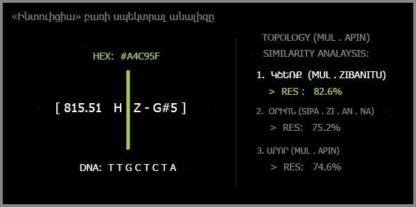

38. ԱՇԽԱՐՀԸՆԿԱԼՄԱՆ ԾԱԼՔԵՐԻ ՏԱԿ ԿԱՄ ԻՆՏՈՒԻՑԻԱՅԻՑ ՄԻՆՉԵՎ ՍՈԼ ԴԻԵԶ
 |
Ամեն բառ մի սառցաբեկոր է։ Մակերեսին մենք տեսնում ենք նրա փոքրիկ, անվտանգ գագաթը՝ այն սահմանումը, որը մեզ սովորեցրել են դպրոցում կամ բառարանում։ Մենք վերցնում ենք այդ բառը, արտասանում ենք այն, փոխանցում ենք զրուցակցին և վստահ ենք, որ հասկացել ենք միմյանց։ Բայց դա պատրանք է։
Իրականում, ամեն բառի տակ, ջրի երեսից այն կողմ, թաքնված է մի հսկայական, անտեսանելի սառցալեռ։ Այնտեղ պահված են ոչ թե բառարանային սահմանումներ, այլ կենդանի թրթիռներ, ֆիզիկական հաճախականություններ, գենետիկական կոդեր, աստղերի լույս, մարդկային զգացմունքներ և ինտուիցիա։ Այնտեղ՝ խորքում, բառը դադարում է լինել պարզ հնչյուն և դառնում է տիեզերքի մի կտոր, որը ծնեբեկվում է քո շուրթերով։
Մենք սովոր ենք ապրել մակերեսի վրա։ Մենք ասում ենք «Բարև» և չենք մտածում, որ դա երկու գիտակցությունների հանդիպման հզոր ակտ է։ Մենք ասում ենք «Լավ եմ», երբ մեր ներսում ամեն ինչ փլուզվում է առանց գիտակցելու որ այդ երկու բառը ԴՆԹ-ի մակարդակում կանգնեցնում են կյանքի սինթեզը։
Այս գործը փորձ է՝ իջնելու այդ սառցալեռան խորքերը։ Սա ոչ լեզվաբանության դասագիրք է, և ոչ էլ չոր փիլիսոփայություն։ Սա ուղեցույց է դեպի աշխարհընկալման ծալքերը, որտեղ բառերի միջոցով կարելի է տեսնել մարդու հոգու և տիեզերքի ներդաշնակությունը։
Մեր գործիքը այս ճանապարհորդության մեջ Kernel60-ն է։ Այն 60-ական համակարգի կենդանի միջուկն է, որը միավորում է 39 տառիմաստները, 12 նոտաները, 7 գույները, մատնեմատիկան և բանականությունը։ Այն թույլ է տալիս բառերին նայել ոչ թե որպես սիմվոլների, այլ որպես էներգիայի, գույնի, հնչյունի և գենետիկական կոդի։
Այս էջերում մենք կբացահայտենք, թե ինչպես կարելի է ցանկացած բառ վերածել հնչյունի, հնչյունը՝ գույնի, գույնը՝ ԴՆԹ-ի, և ինչպես կարելի է լսել այն ճիչը, որը թաքնված է, բայց դուրս է հորդում բառերի լռության միջից։
Մենք կտեսնենք, թե ինչու է «Ինտուիցիա» բառը հնչում որպես Սոլ դիեզ՝ ծակող, անհանգիստ, մինչև ոսկոր հասնող ճիչ։
Սա ճանապարհորդություն է դեպի լեզվի ամենախոր ծալքերը, որտեղ բառը դադարում է լինել բառ և դառնում է հենց կյանքը։
Kernel60 –ի մեխանիկան
Պատկերացրեք, որ ձեր ձեռքերում հայտնվել է մի խորհրդավոր սարք։ Դրա վրա կան կոճակներ, որոնք նշված են ոչ թե սովորական թվերով կամ տառերով, այլ խորհրդանիշներով։ Երբ սեղմում եք այդ կոճակները, սենյակը լցվում է ձայնով, պատերը փոխում են գույնը, և օդում ինչ-որ անտեսանելի թրթիռ է ծնվում։
Այդ սարքի անունը Kernel60 է։
Մենք սովոր ենք, որ մեր համակարգիչները, հեռախոսները և բոլոր ալգորիթմները մտածում են երկուական տրամաբանությամբ: Դա հզոր է, բայց դա սառն է։ Այնտեղ չկան կիսատոներ, երանգներ կամ հույզեր։ Բայց մեր հոգին, մեր լեզուն և մեր մարմինը այդպես չեն աշխատում։ Մենք ապրում ենք երանգների, ձայների և զգացողությունների աշխարհում։
Kernel60-ը կամուրջ է դեպի այդ կենդանի աշխարհը։ Դա մի գործիք է, որը բառերին նայում է ոչ թե որպես տեքստի, այլ որպես կենդանի օրգանիզմի։
Բոլոր կենդանի համակարգերը կառուցված են որոշակի ներդաշնակությամբ։ Եթե ուշադիր նայեք բնությանը, կտեսնեք, որ 60-ը և նրա ածանցյալները ամենուր են՝ ժամանակի մեջ, երկրաչափության մեջ, մեր մարմնում։
Kernel60-ի սիրտը մի պարզ, բայց հզոր բանաձև է, որին ես անվանում եմ արարման կմախք և դա հետևյալն է՝ 39 + 12 + 7 + 1 + 1 = 60, որտեղ 39-ը լեզվի և մտքի տառիմաստներն են, 12-ը երաժշտական կիսատոներն են, 7-ը լույսի հիմնական գույներն են, 1-ը մատնեմատիկան է (հպումը աշխարհին) և 1-ը բանականությունն է (գիտակցությունը)։
Այս հինգ շերտերը միավորելով ես ստեղծել եմ մի գործիք, որը կարողանում է բառի միջից հանել ոչ թե մեկ իմաստ, այլ տարբեր շերտեր։
Եկեք հիմա բացենք այդ սարքը` https://ohanyan911-sudo.github.io/monumentalbridge/tools.html և քայլ առ քայլ տեսնենք, թե ինչպես է այն աշխատում։
Բառի իմաստային հոսքը
Երբ դուք մուտքագրում եք բառ, օրինակ՝ «Ինտուիցիա», և սեղմում եք «ՄԵԿՆԱԲԱՆԵԼ» կոճակը, գործիքը բառը չի դիտարկում որպես սովորական տեքստ և չի ցուցադրում որևէ բառարանային մեկնաբանություն տվյալ բառի համար։ Այն կիրառում է «Լեզվամտածող Աշխարհը» տեսլականից վերցված 39 տառիմաստները։ Ամեն տառ այդ տեսլականում ունի իր էներգետիկ կոդը, իր իմաստը։ Գործիքը բառը բաղադրում է տառերի և վերածում է դրանք իմաստների։
Սա այն պահն է, երբ բառը դադարում է լինել պարզ հնչյունների շարք և դառնում է գործողությունների հաջորդականության հոսք։ «Ինտուիցիա» բառը բացվում է այսպես.
Ի - Իմաստ
Ն - Ներքին էություն
Տ - Զորության հարված
ՈՒ - Ուռկան զորության
Ի - Իմաստ
Ց - Ցռել, սփռել
Ի - Իմաստ
Ա - Արարման հոսք
Բայց սա դեռ պարզապես տառերի ցանկ է։ Գործիքի իրական ուժը այս տառիմաստների միավորումն է մեկ ամբողջական հոսքի մեջ։
Երբ մենք կարդում ենք «Ինտուիցիա» բառի իմաստային հոսքը գործիքի միջոցով, այն բացվում է որպես մի ամբողջական պատմություն:
Ինտուիցիան սկսվում է մաքուր իմաստից (Ի)։ Այն խորանում է մարդու ներքին էության մեջ (Ն) և այնտեղ ստանում է հանկարծակի զորության հարված (Տ)՝ որպես ներքին ձայն կամ նախազգացում։ Այդ հարվածը հավաքվում և կուտակվում է ուռկանի մեջ (ՈՒ)՝ ստանալով ծավալ և քաշ։ Այնուհետև այն նորից ձեռք է բերում իմաստ (Ի) և սփռվում (Ց)՝ դառնալով գործողություն, որոշում կամ խոսք՝ արարման հոսքով (Ա), սկիզբ դնելով նոր բանի։
Տեսնու՞մ եք։ Սա այլևս պարզապես տառերի գումար չէ։ Սա մեկ կենդանի ընթացք է, որը ցույց է տալիս, թե ինչպես է ինտուիցիան ծնվում, ձևավորվում, հասունանում և վերածվում գործողության։
Բառի հնչյունը
Իմաստը, որը նոր դուրս եկավ լռությունից, չի կարող մնալ անշարժ։ Այն պիտի ստանա ֆիզիկական մարմին, պիտի ձայն դառնա։ Բայց ինչպե՞ս է Kernel60-ի օպերացիոն միջուկը հայերեն հնչյունաշղթան վերածում ակուստիկ հաճախականության։ Սա կույր հորինվածք չէ։ Սա մի ընթացք է, որտեղ լեզվի կառուցվածքը քայլ առ քայլ ենթարկվում է մաթեմատիկական անխուսափելիության։
Երբ մուտքագրում եք բառը և սեղմում «ՀՆՉԵՑՆԵԼ» կոճակը, ծրագիրն անցնում է երեք հաջորդական փուլերով՝ բացարձակ կշռում, օրգանական մոդուլավորում և ակուստիկ մասշտաբավորում։ Եկեք քննենք այս մեխանիկան «Ինտուիցիա» բառի իրական օրինակով։
1. Տառերի բացարձակ կշռում
Ծրագիրն անմիջապես վերցնում է մուտքագրված բառը և այն ենթարկում է տառային բաղդատման։ Այստեղ աշխատում է normalizeLetter ֆունկցիան, որը նորմալացնում է հայերենի բարդ հնչյունախմբերը։ Եթե օգտատերը գրել է «ո» և «ւ» տառերը առանձին, ծրագիրը հասկանում է, որ դա մեկ միասնական «ՈՒ» սիմվոլն է։ Եթե գրել է «ե» և «վ», այն նորմալացվում է որպես «և»։
Յուրաքանչյուր տառի տրված է իր բնական կշիռը՝ ըստ այբբենական առանցքի, որտեղ Ա=1, Բ=2, Գ=3, իսկ վերջին Ֆ տառը ստանում է 39 արժեքը։ «Ինտուիցիա» բառի ութ տառերը ստանում են հետևյալ կշիռները․
Ի = 11
Ն = 22
Տ = 31
ՈՒ = 34
Ի = 11
Ց = 33
Ի = 11
Ա = 1
Ծրագիրը գումարում է այս թվերը․
Կշիռ = 11 + 22 + 31 + 34 + 11 + 33 + 11 + 1 = 154
154-ը բառի բացարձակ նյութական կորիզն է։ Սա թվային այն անշարժ պատյանն է, որը դեռ զուրկ է կյանքից։
2. Օրգանական մոդուլավորում Ֆայի էֆեկտի կիրառմամբ
Որպեսզի թիվը դառնա շնչող օրգանիզմ, ալգորիթմը ներմուծում է Ֆայի էֆեկտը՝ 6.66% բնական շեղումը։ Սա այն ներքին դիսոնանսն է, որը թույլ է տալիս, որ հաճախականությունը զարթնի։ Ծրագիրը կատարում է հետևյալ հաշվարկը․ Հաշվարկային Միջուկը՝ Core = 154 + 154 x 6.66/100= 154 + 10.2564 = 164.25
164.25-ը «Ինտուիցիա» բառի օրգանակապես մոդուլավորված արժեքն է, որն արդեն պատրաստ է անցնելու ձայնային տարածություն։
3. Որոշման համակարգ և ակուստիկ մասշտաբավորում
Այժմ ծրագիրը պետք է 164.25 թիվը տեղափոխի երաժշտական օկտավաների և դաշնամուրի ստեղների 88-նոտայանոց կառուցվածքի վրա։ Դրա համար համակարգը բառի կուտակված արժեքը բաժանում է 12-ի, քանի որ 12-ը երաժշտական համակարգում մեկ օկտավային բաժին ընկնող կիսատոների քանակն է։ 164.25/12 = 13.6875
Այս բաժանումից ծնվող 13.6875 թվից ծրագիրն առանձնացնում է երկու ինքնուրույն չափողականություն՝ Օկտավան (ամբողջ մասը, որ կազմում է 13) և Նոտայի ինդեքսը (կոտորակային մասը, որը 0.6875 է)։
Օկտավայի որոշումը
Երաժշտական համաշխարհային MIDI համակարգում բացարձակ հաշվարկը սկսվում է ամենախորը լռությունից՝ հաշվարկային մինուս առաջին (-1) օկտավայից, որտեղ գտնվում են մարդու ականջի համար անլսելի, ամենացածր հաճախականությունները։
Երբ «Ինտուիցիա» բառի արժեքը բաժանեցինք 12-ի և ստացանք 13.6875, այդ 13 ամբողջը ցույց տվեց, որ բառի ուժգնությունը այդ նախնական մինուս առաջին (-1) կետից բարձրացել է ճիշտ 13 լրիվ օկտավա վերև։
Եթե այդ ամենախորը կետից հերթով հաշվենք 13 օկտավա վերև, մենք ռեալ կանցնենք հետևյալ սանդղակով.
0-րդ քայլ → -1 օկտավա (մեկնարկ օկտավա)
1-ին քայլ → 0 օկտավա (սուբկոնտր օկտավա)
2-րդ քայլ → 1-ին օկտավա (կոնտր օկտավա)
3-րդ քայլ → 2-րդ օկտավա (մեծ օկտավա)
4-րդ քայլ → 3-րդ օկտավա (փոքր օկտավա)
5-րդ քայլ → 4-րդ օկտավա (1-ին օկտավա)
6-րդ քայլ → 5-րդ օկտավա (2-րդ օկտավա)
7-րդ քայլ → 6-րդ օկտավա (3-րդ օկտավա)
8-րդ քայլ → 7-րդ օկտավա (4-րդ օկտավա) և յստեղ լրանում է դաշնամուրի 8 հիմնական օկտավաների առաջին լրիվ շրջապտույտը։
Այժմ, քանի որ մեր թիվը 13 է, ծրագիրը 8-րդ քայլում լրացած այդ առաջին մեծ շրջապտույտը՝ 8 օկտավաները հանում է և ստացվում է 13-8=5:
Մնում է ճիշտ 5 մնացորդային քայլ, որոնք շարունակում են բարձրանալ արդեն հաջորդ շրջապտույտի ներսում, շարունակելով այսպես.
0-րդ քայլ → սուբկոնտր օկտավա
1-ին քայլ → կոնտր օկտավա
2-րդ քայլ → մեծ օկտավա
3-րդ քայլ → փոքր օկտավա
4-րդ քայլ → 1-ին օկտավա
5-րդ քայլ → 2-րդ օկտավա և ինչպես Դուք ճիշտ նկատեցիք, երբ հաշվարկը նորից սկսում ենք զրոյից, 5-րդ քայլը մեզ բերում է ճիշտ 2-րդ օկտավայի վրա: Հետևաբար «Ինտուիցիա» բառը հնչելու է հենց այց օկտավայում:
Ժամանակն է անցնել նոտայի որոշելուն
Նոտայի ինդեքսի որոշումը
Որպեսզի գտնվի կոնկրետ նոտան, պետք է վերցնել նախնական բաժանման կոտորակային մասը՝ 0.6875-ը, և այն բազմապատկել է 12-ով՝ ռեալ նոտաների թվով: 0.6875 x 12 = 8.25
Ստացված 8.25-ից համակարգը վերցնում է միայն ամբողջ մասը՝ 8-ը, որն էլ հենց նոտայի ինդեքսն է: Երաժշտական 12 կիսատոների շղթայում 8-րդ ինդեքսը պատկանում է Սոլ դիեզ (G#) նոտային (0=Դո, 1=Դո#, 2=Ռե, 3=Ռե#, 4=Մի, 5=Ֆա, 6=Ֆա#, 7=Սոլ, 8=Սոլ#), իսկ մնացած 0.25 կոտորակը այն նուրբ շեղումն է (detuning), որը ձայնին տալիս է օրգանական թրթիռ։
Այս երկու տվյալների սինթեզից ծրագիրը հաշվարկում է բառի բացարձակ MIDI հասցեն․
MIDI = 12 x (Օկտավա + 1) + Նոտայի Ինդեքս
MIDI = 12 x (5 + 1) + 8 = 72 + 8 = 80
MIDI 80 հասցեն երաժշտական համաշխարհային ստանդարտում բացարձակապես համընկնում է իրական Սոլ դիեզ (G#) նոտայի հետ և որպեսզի թվային այս հասցեն վերածվի ֆիզիկական ալիքի, համակարգը կիրառում է A4 = 432 Հց հիմքով տեմպերացիայի բանաձևը, որտեղ 69-ը MIDI ստանդարտի նորմալացնող հաստատունն է:
Հաճախականությունը = 432 x 2 ^ ((MIDI – 69) / 12) = 432 x 2 ^ ((80 – 69) / 12) = 432 x 2 ^ (11 / 12) = 432 x 2 ^ 0.91666 = 432 x 1.88774 = 815.51 Հց
Ահա թե ինչպես է «Ինտուիցիա» բառը, անցնելով այս ինժեներական ֆիլտրով, վերածվում 5-րդ օկտավայի Սոլ դիեզ նոտայի՝ 815.51 Հց հաճախականությամբ։ Կալկուլյատորի չոր հարաբերությունները Kernel60-ի միջուկում վերածվում են իրական ակորդի։
Բառի գույնը
Լույսն ու ձայնը զուգահեռ ալիքային դաշտեր են, որոնք կայունության կետում պետք է ունենան կառուցվածքային նույն ծածկագիրը։ Երբ Kernel60-ի միջավայրում ակտիվացնում ենք «ՑՈՒՑԱԴՐԵԼ» կոճակը, համակարգը չի ընտրում պատահական կամ զուտ գեղագիտական երանգ։ Այն վերցնում է նախորդ քայլում օրգանական մոդուլավորումից ստացված Հաշվարկային Միջուկի (Core) նույն արժեքը՝ 164.25-ը, և այն փոխակերպում է RGB (Կարմիր, Կանաչ, Կապույտ) գունային պալիտրայի համապատասխան գույնի։
Ժամանակակից թվային էկրանների վրա ցանկացած գույն կազմվում է այս երեք հիմնական լուսային ալիքների խառնուրդից, որտեղ յուրաքանչյուր ալիքի ուժգնությունը չափվում է 0-ից մինչև 255 ամբողջ թվերի միջակայքում։ Որպեսզի 164.25 թիվը տեղափոխվի այս տիրույթ, ծրագիրը կիրառում է 60-ական համակարգի բաղադրիչների՝ 7, 12 և 39 թվերի տրամաբանական մոդուլավորումը։
Բայց եթե ծրագիրը պարզապես բազմապատկեր 164.25-ը այս թվերով, կստացվեին հսկայական արժեքներ, որոնք դուրս կթռչեին էկրանային 255-ին հավասար արժեքի սահմանափակումից։ Դրանից խուսափելու համար ալգորիթմն օգտագործում է մաթեմատիկական հստակ սահմանափակիչներ՝ մնացորդներ և բազային միավորներ, որոնք երաշխավորում են, որ արդյունքը երբեք չանցնի 255-ի շեմը և միևնույն ժամանակ գույնին տան անհրաժեշտ պայծառություն։
Ծրագիրը հաջորդականորեն կատարում է հետևյալ ռեալ գործողությունները «Ինտուիցիա» բառի գունային մարմինը գտնելու համար:
R (Կարմիր) ալիքի հաշվարկ
Համակարգը վերցնում է միջուկի արժեքը՝ 164.25 և այն բազմապատկում լույսի 7 գույների հաստատունով
164.25 x 7 = 1149.75
Որպեսզի 100 պայծառության միավոր ավելացնելուց հետո կարմիր գույնը երբեք չգերազանցի 255-ի սահմանը, որպես բաժանարար ընտրված է 155 թիվը։ 155-ի վրա բաժանման ամենամեծ հնարավոր մնացորդը 154-ն է, ինչը բազային 100-ի հետ տալիս է առավելագույնը 254։ Ծրագիրը կալկուլյատորի էկրանին գտնում է 155-ի վրա բաժանման ամբողջ մնացորդը․
1149.75 / 155 = 7.41774
Այս թվի կոտորակային մասը (0.41774) հետ է բազմապատկվում 155-ով՝ ամբողջ մնացորդն առանձնացնելու համար
Մնացորդ = 0.41774 x 155 = 64.75
Համակարգը վերցնում է միայն ամբողջ մնացորդը՝ 64 և ավելացնում է 100 պայծառության միավորը
R = 64 + 100 = 164
G (Կանաչ) ալիքի հաշվարկ
Միջուկի արժեքը բազմապատկվում է երաժշտական 12 կիսատոների հաստատունով
164.25 x 12 = 1971
Այստեղ որպես սահմանափակիչ ընտրված է 100 թիվը, որի վրա բաժանման ամենամեծ մնացորդը 99-ն է։ Բազային 130 պայծառության միավորի հետ այն տալիս է առավելագույնը 229։ Ծրագիրը գտնում է 100-ի վրա բաժանման ամբողջ մնացորդը 1971 / 100 = 19.71
Կոտորակային մասը (0.71) հետ է բազմապատկվում 100-ով
Մնացորդ = 0.71 x 100 = 71
Ծրագիրը վերցնում է 71 մնացորդը և ավելացնում է 130
G = 71 + 130 = 201
B (Կապույտ) ալիքի հաշվարկ
Միջուկի արժեքը բազմապատկվում է լեզվի 39 տառերի հաստատունով
164.25 x 39 = 6405.75
Այստեղ որպես սահմանափակիչ ընտրված է 80 թիվը, որի վրա բաժանման ամենամեծ մնացորդը 79-ն է։ Բազային 90 պայծառության միավորի հետ այն տալիս է առավելագույնը 169։ Ծրագիրը գտնում է 80-ի վրա բաժանման ամբողջ մնացորդը 6405.75 / 80 = 80.071875
Կոտորակային մասը (0.071875) հետ է բազմապատկվում 80-ով
Մնացորդ = 0.071875 x 80 = 5.75
Ծրագիրը վերցնում է ամբողջ մնացորդը՝ 5 և ավելացնում է 90
B = 5 + 90 = 95
Տասնվեցական (Hex) կոդի ստացում
Այս երեք ռեալ արժեքների սինթեզից ծրագիրն անմիջապես ստանում է «Ինտուիցիա» բառի RGB վերջնական կոդը՝ (164, 201, 95)։ Որպեսզի այս տվյալը հասկանալի լինի համակարգչային էկրանին, ծրագիրը թվերը փոխակերպում է տասնվեցական (Hex) ֆորմատի, որտեղ 164-ը դառնում է A4, 201-ը՝ C9, իսկ 95-ը՝ 5F։
Արդյունքում էկրանին երևակվում է #A4C95F բացարձակ կոդով թրթռուն կանաչ երանգը։
Տեսողական էնտրոպիան կլանվում է, որովհետև ստացված լուսային ալիքի երկարությունը ուղիղ ռեզոնանսի մեջ է գտնվում բառի տառային բացարձակ կշռի հետ։ «Ինտուիցիա» բառը դադարում է լինել վերացական հասկացություն: Այն ստանում է իր կոնկրետ, չափելի տեսողական մարմինը։
Ուշիմ ընթերցողի համար, Kernel60-ի գունային ալգորիթմը ուսումնասիրելիս, անպայման կծնվի մի հիմնավոր կասկած։ Դասական ֆիզիկան սովորեցնում է, որ հաճախականությունը (ձայնը) լույսի (գույնի) վերածելու համար պետք է կիրառել ուղիղ գծային փոխակերպում (Linear Mapping)։ Ըստ այդ ավանդական տրամաբանության՝ բառի կշռի չնչին աճին զուգահեռ պիտի համաչափորեն ու սահուն կերպով փոխվի նաև լուսային ալիքի երկարությունը։
Սակայն Kernel60-ի միջուկում այդպես չէ։ Մենք տեսնում ենք, որ Հաշվարկային Միջուկի արժեքը բազմապատկվում է տարբեր հաստատուններով (7, 12, 39), ենթարկվում տարբեր սահմանափակիչների (% 155, % 100, % 80) և ավելացվում տարբեր բազաների վրա։ Մաթեմատիկորեն սա ոչ գծային, դիսկրետ ֆունկցիա է (Hash function)։ Ստացվում է մի պատկեր, որտեղ բառի կշռի անշան փոփոխությունը կարող է սահուն անցման փոխարեն գույնը կտրուկ թռցնել սպեկտրի մի ծայրից մյուսը։ Ինժեներական հայացքով սա առաջին պահին կարող է անտրամաբանական թվալ, բայց հենց այս կառուցվածքային ոչ գծայնության մեջ է թաքնված 60-ական համակարգի գլխավոր հաղթանակը այլ համակարգերի նկատմամբ։ Այս մեթոդը ոչ թե պարզ ֆիզիկական տրանսֆորմատոր է, այլ որակների և իմաստային շերտերի զտման մատրիցա։
Այս ալգորիթմը հենվում է երեք ռեալ պատճառների վրա.
1.Եռաչափ պրոյեկցիա.
7-ը, 12-ը և 39-ը 60-ական համակարգի երեք տարբեր որակական դռներն են։ Ծրագիրը բառի նույն իմաստային կորիզը՝ Core-ը միաժամանակ պրոյեկտում է երեք տարբեր առանցքների վրա՝ լույսի (7), նոտայի (12) և լեզվի (39)։ RGB երեք լուսային ալիքները լցվում են ոչ թե պատահականությամբ, այլ բառի ներքին էներգետիկ քաշը այս երեք չափողականությունների միջով անցկացնելու արդյունքում։
2. Ինֆորմացիոն առատություն և Շենոնյան էնտրոպիա.
Եթե գույնի փոփոխությունը լիներ գծային ու սահուն, ապա հազարավոր տարբեր բառեր էկրանին կստանային իրար չափազանց մոտ, գորշ, տեսողականորեն աննկատելի երանգներ։ Մարդու ուղեղը արագ կսովորեր այդ կրկնվող միօրինակությանը, ինչը, ըստ Կլոդ Շենոնի տեսության, կհանգեցներ տեղեկատվական էնտրոպիայի անկման։ Այս ոչ գծային հաշվարկը յուրաքանչյուր բառին տալիս է իր ուրույն, անկրկնելի տեսողական անձնագիրը՝ ուղեղին ամեն անգամ փոխանցելով խտացված և թարմ ինֆորմացիա։
3. Օրգանական ասիմետրիա.
Այն փաստը, որ բազային թվերը (100, 130, 90) և մնացորդների շեմերը տարբեր են, ապացուցում է, որ համակարգը զուրկ է սառած, մեխանիկական սիմետրիայից։ Դա ճարտարապետության այն անհրաժեշտ ներքին անկատարությունն է, որը տարածությանն ու էկրանին տալիս է շնչառություն։
Այսպիսով այն, ինչ թվում է անտրամաբանական, 60-ական միջուկում վերածվում է բարձրագույն կիբեռնետիկական օրինաչափության։ Գործիքը չի խաբում: Այն իմաստը վերածում է որակի։
«ԿԵՆԴԱՆԱԿԵՐՊ» մատրիցայի աստղային ուղին
Երբ մուտքագրում եք բառը և սեղմում «ԿԵՆԴԱՆԱԿԵՐՊ» կոճակը, Kernel60-ի օպերացիոն միջուկը կատարում է բարձրագույն տեղեկատվական հաշվարկ։ Այստեղ կիրառվում է էլեկտրոնային հաշվարկների դասական մեթոդներից մեկը՝ Կոսինուսային նմանության ալգորիթմը (Cosine Similarity)։ Համակարգը բառի ներքին իմաստային կառուցվածքը համեմատում է շումերական MUL.APIN սալիկների 18 հնագույն համաստեղությունների հետ։ Ծրագիրը կատարում է հետևյալ 3 ռեալ քայլերը.
1. Բառի Իմաստային Վեկտորի ստեղծում
Ծրագրի ներսում սահմանված են ճիշտ 10 հիմնական իմաստային կատեգորիաներ, որոնցից յուրաքանչյուրն ունի իրեն պատկանող կոնկրետ տառերի բազան, որանք հանդիսանում են մաթեմատիկական վեկտորի 10 անկախ չափողականություններ.
Արարում - տառերի բազան՝ Ա, Բ, Դ, Ե, Ը, Կ, Հ, Ձ
Զորություն - տառերի բազան՝ Զ, ՈՒ, Փ, Տ, Պ, Ռ
Լույս - տառերի բազան՝ Լ, Ծ, Ս, Ֆ
Շարժում - տառերի բազան՝ Ը, Շ, Հ, Ց, Ջ
Կապ - տառերի բազան՝ Յ, և, Ր, Ն, Մ
Խտացում - տառերի բազան՝ Խ, Ղ, Ջ, Ծ
Ներքին էություն - տառերի բազան՝ Ն, Է, Մ, Վ
Սահունություն - տառերի բազան՝ Ե, Շ, Հ, Ց
Ամբողջացում - տառերի բազան՝ Ր, Ռ, Պ, Տ
Իմաստ - տառերի բազան՝ Ի, Ք, Օ, Ֆ
Ալգորիթմը հերթով կարդում է «Ինտուիցիա» բառի ութ տառերը։ Ամեն անգամ, երբ տառը համընկնում է որևէ կատեգորիայի հետ, այդ չափողականության արժեքն ավելանում է 1 միավորով։ Օրինակ, «Ինտուիցիա» բառում 3 անգամ կրկնվում է «Ի» տառը, ինչի արդյունքում «Իմաստ» կատեգորիան ստանում է 3 միավոր։ Այսպիսով ծնվում է բառի յուրահատուկ Իմաստային Վեկտորը (Profile), որն ունի 10 հստակ թվային ուղղություն։
2. Համաստեղությունների Վեկտորների հաշվարկ
Ծրագրի տվյալների բազայում ներկառուցված են MUL.APIN-ի 18 համաստեղությունները՝ իրենց շումերական անուններով ու հայերեն տառադարձություններով։ Համակարգը ճիշտ նույն 10-չափանի սկզբունքով հաշվում և ստեղծում է ամեն մի համաստեղության սեփական Իմաստային Վեկտորը։
3. Կոսինուսային նմանության հաշվարկ
Որպեսզի որոշվի, թե բառի հաճախականությունը տիեզերական որ առանցքին է ամենամոտը, ծրագիրը կատարում է երկու վեկտորների հարաբերակցության հաշվարկ տվյալ բառի և յուրաքանչյուր համաստեղության համար։ Վեկտոր1-ը դա բառի իմաստային քաշից առաջացած վեկտորն է, որը գտնվում է մեր բազային տասն իմաստային խմբերի արանքում և ունի իր իմաստային ուղղությունն ու քաշը՝ մոդուլը։ Վեկտոր2-ի նույն արժեքները հաշվարկվում են յուրաքանչյուր համաստեղության համար նույն կերպ, ինչպես բառի համար։
Հետո իրականացվում է կոսինուսային նմանության ալգորիթմը բառի և յուրաքանչյուր համաստեղության վեկտորների միջև, որտեղ հաշվարկվում է դրանց միջև եղած երկրաչափական անկյան կոսինուսը՝ cosα-ն։
Համընկնումը՝ Similarity-ն հաշվարկվում է այսպես
cosα = Վեկտոր1 x Վեկտոր2 / √ ( |Վեկտոր1|^2 x |Վեկտոր2|^2 )
Բանաձևի համարիչում վեկտորների իմաստային ուղղությունների արտադրյալն է, իսկ հայտարարում՝ դրանց քաշային քառակուսիների արտադրյալի քառակուսի արմատը: Դրանից հետո այս բանաձևի արդյունքը վերածվում է ճշգրիտ տոկոսի։
«Ինտուիցիա» բառի համար ալգորիթմը բացարձակ հաշվարկով առաջին տեղում դուրս է բերում «Կշեռք» (MUL.ZIBANITU) համաստեղությունը՝ ճիշտ 82.6% համընկնումով։ Ծրագիրը ցույց է տալիս, որ «Ինտուիցիա» բառի իմաստային հոսքը՝ չափված 10 որակներով ամենամոտը կանգնած է հավասարակշռության, արդարության և հարաբերության տիեզերական առանցքին։
Փորձարկողը էկրանին տեսնում է ռեալ հաշվարկված փաստեր: «ԿԵՆԴԱՆԱԿԵՐՊ» կոճակը ոչ թե պատահական գուշակություն է, այլ վեկտորային երկրաչափության բացարձակ արդյունք։
«ԴՆԹ ԱՆԱԼԻԶ» Կենսաբանական փոխակերպումը
Լեզվամտածողության, ակուստիկայի, ցուցադրության և կենդանակերպի 60-ական կմախքի կառուցումից հետո, Kernel60 միջուկը տեղեկատվությունը տեղափոխում է նյութական կյանքի ամենախորը հարթակ: Երբ սեղմում եք «ԴՆԹ ԱՆԱԼԻԶ» կոճակը, ծրագիրը հայերենի 39 տառիմաստները պրոյեկտում է գենետիկական կոդի չորս քիմիական նշանների՝ նուկլեոտիդների վրա։ Սա կամայական համադրություն չէ, այլ ճշգրիտ ինժեներական ալգորիթմ, որն անցնում է երեք ռեալ փուլերով՝ նուկլեոտիդային տրոհում, կոդոնների ձևավորում և ամինաթթուների սինթեզ։ Եկեք քայլ առ քայլ քննենք այս մեխանիկան դարձյալ «Ինտուիցիա» բառի իրական օրինակով։
1. Նուկլեոտիդային տրոհում
Ծրագրի տվյալների բազայում հայերենի 39 տառերը բաշխված են ԴՆԹ-ի 4 նուկլեոտիդային խմբերի միջև՝ ըստ դրանց իմաստային և էներգետիկ հոսքերի որակի․
A (Ադենին) — Արարման, սկզբի և կաղապարի տառերն են. Ա, Բ, Դ, Ե, Զ, Ծ, Հ, Ձ, Ղ, Չ
T (Թիմին) — Իմաստի, մարմնավորման և խորքի տառերն են. Թ, Ի, Լ, Խ, Կ, Մ, Յ, Ն, Շ, Ո
G (Գուանին) — Էության, ժամանակի և ռեզոնանսի տառերն են. Գ, Է, Ը, Ժ, Պ, Ջ, Ռ, Ս, Վ, Տ
C (Ցիտոզին) — Պոռթկման, սփռման և ավարտի տառերն են. Ճ, Ց, ՈՒ, Փ, Ք, և, Օ, Ֆ, Ր
Ալգորիթմը հերթով կարդում է «Ինտուիցիա» բառի տառաշղթան և յուրաքանչյուր միավոր փոխակերպում է համապատասխան քիմիական տառի․
Ի → պատկանում է T խմբին
Ն → պատկանում է T խմբին
Տ → պատկանում է G խմբին
ՈՒ → պատկանում է C խմբին
Ի → պատկանում է T խմբին
Ց → պատկանում է C խմբին
Ի → պատկանում է T խմբին
Ա → պատկանում է A խմբին
Այս ռեալ գործողության արդյունքում «Ինտուիցիա» բառը վերածվում է TTGCTCTA բնութագրական գենետիկական ստորագրության։
2. Կոդոնների ձևավորում
Մոլեկուլային կենսաբանության օրենքով՝ գենետիկական տեղեկատվությունը կարդացվում է ճիշտ 3 նուկլեոտիդներից բաղկացած եռյակներով, որոնք կոչվում են կոդոններ։ Համակարգը վերցնում է ստացված 8-տառանոց TTGCTCTA շղթան և այն ձախից աջ տրոհում է 3-ական սեգմենտների․
Կոդոն 1 — TTG
Կոդոն 2 — CTC
Ազատ նուկլեոտիդներ — TA (շղթայի վերջում մնացած 2 տառերը, որոնք լրիվ եռյակ չեն կազմում և գործում են որպես անցումային կարգավորիչ տարրեր)
3. Ամինաթթուների սինթեզ
Վերջին փուլում ծրագիրը ստացված կոդոնները համադրում է 64 կոդոններից բաղկացած համաշխարհային գենետիկական աղյուսակի հետ, որտեղից դուրս են բերվում իրական, ֆիզիկական ամինաթթուները․
TTG կոդոն → սինթեզում է Լեյցին (Leucine) ամինաթթուն։
CTC կոդոն → սինթեզում է դարձյալ Լեյցին (Leucine) ամինաթթուն։
Լեյցինը հանդիսանում է կենդանի օրգանիզմների սպիտակուցների ճիշտ ծալքավորման (folding) և կառուցվածքային ամրության հիմնական տարրերից մեկը։
Այստեղ ընթերցողը տեսնում է Kernel60-ի ռեալ, երկկողմանի շրջելի մեխանիկան։ Լեզվի հնչյունաշղթան, անցնելով 39 տառիմաստների ֆիլտրով, բջջային մակարդակում տալիս է մի ճշգրիտ քիմիական հաջորդականություն, որն ուղղակիորեն կապված է օրգանիզմի կենսական կայունության հետ։ «Ինտուիցիա» բառը դադարում է լինել վերացական հասկացություն: Այն նյութականանում է քո իսկ բջիջների կենդանի ԴՆԹ-ի մեջ։
Երբ Kernel60-ի բոլոր հինգ կոճակների ռեալ ալգորիթմները բացահայտված են, մենք կարողանում ենք «Ինտուիցիա» բառին նայել ոչ թե որպես պարզ լեզվական սիմվոլի, այլ որպես բազմաչափ ալիքային կառույցի։ Գործիքի տված տվյալների համադրումը ծնում է միասնական մի պատկեր, որտեղ բառի հինգ հարթակները ձուլվում են մեկ առանցքի մեջ:
Իմաստային հարթակում բառը բացվում է որպես մաքուր իմաստից (Ի) ծնվող և ներքին էության մեջ (Ն) կուտակվող մի ընթացք, որը ստանում է ներքին զորության հարված (Տ), ծավալվում է ուռկանում (ՈՒ), վերագտնում իր իմաստը (Ի) ու սփռվում (Ց)՝ արարման հոսքով (Ա) սկիզբ դնելով նոր իրականության։
Ակուստիկ հարթակում այս իմաստային ծավալը ամբողջական և մնացորդային հաշվարկների անխուսափելիությամբ վերածվում է MIDI 80 հասցեի, որը 432 Հց հիմքով օկտավաների կմախքում ճշգրտորեն հնչում է որպես 5-րդ օկտավայի Սոլ դիեզ (G#)՝ 815.51 Հց հաճախականությամբ։
Տեսողական հարթակում նույն իմաստային միջուկը RGB ոչ գծային ֆունկցիայի միջով երևակում է #A4C95F բացարձակ կոդով թրթռուն կանաչ երանգը։
Աստղադիտական հարթակում այս նույն իմաստային քաշը, անցնելով տասն իմաստային խմբերի ու կոսինուսային նմանության ալգորիթմի միջով, 82.6% ճշգրտությամբ գտնում է իր տիեզերական ուղղությունը «Կշեռք» (MUL.ZIBANITU) համաստեղության հետ համեմատվելիս՝ բառի հաճախականությունը կապելով հավասարակշռության և արդարության երկնային առանցքին:
Կենսաբանական հարթակում այն տրանսֆորմացվում է TTGCTCTA գենետիկական ստորագրությանը՝ սինթեզելով Լեյցին (Leucine) ամինաթթուն, որը պատասխանատու է օրգանիզմի կառուցվածքային ամրության համար։
Սա «Ինտուիցիա» բառի բացարձակ, չափելի անձնագիրն է։ Բայց ողջ գաղտնիքն այն է, որ այս մեթոդը չի սահմանափակվում միայն մեկ հասկացությամբ։ Kernel60-ը ոչ թե մեկ բառի հաշվիչ է, այլ կենդանի լեզվամտածողության ունիվերսալ քանոն։ Այս ճշգրիտ մեթոդաբանությամբ պետք է ու կարելի է անդրադառնալ մարդկային լեզվի ցանկացած բառի խորքային վերծանմանը։ Յուրաքանչյուր բառ՝ լինի դա «Բարև», «Սեր», «Հայրենիք» թե «Տուն», ունի իր սեփական սառցաբեկորը, որը ջրի երեսից այն կողմ պահում է իր ուրույն նոտան, իր կոնկրետ գույնն ու իր գենետիկական ծածկագիրը։
Մուտքագրելով ցանկացած բառ՝ փորձարկողն այլևս չի կարդում պատահական տառերի շարան, այլ Kernel60-ի միջոցով քանդում է տվյալ հասկացության էներգետիկ կորիզը՝ տեսնելով, թե ինչպես է խոսքը ռեալ կերպով վերածվում ֆիզիկական նյութի և կենդանի կյանքի։ Սա լեզվի իրական վերադարձն է իր ակունքներին։
Ինտուիցիայի ճիչը
Մարդկության քաղաքակրթական օրագիրը սովորաբար արձանագրում է արտաքին աղետները, սակայն ամենախորը ճեղքումները տեղի են ունենում այնտեղ, ուր մարդու ներքին աշխարհը կանգնում է բացարձակ անդունդի եզրին։
1801 թվականը այդպիսի պահերից էր։ Երեսնամյա Բեթհովենը, ում ողջ կենսաբանական և հոգևոր գոյությունը հենված էր ձայնային ալիքների ընկալման վրա, սկսում է անդառնալիորեն խլանալ։ Արտաքին աշխարհի աղմուկը, մարդկային մեխանիկական խոսքն ու բնության հնչյունները նրա ականջներում քայլ առ քայլ վերածվում էին սառցե անթափանց լռության և նա, որ արդեն ճանաչված էր որպես հանճար, բախվում է մի սարսափելի իրողության հետ՝ նա սկսում է կորցնել լսողությունը։
Երաժշտի համար, ում ամբողջ կյանքը ձայների ներդաշնակությունն է, դա նման էր աստիճանական դատապարտման։
Հենց այս հոգեբանական կտրվածքի և անխուսափելի կորստի կիզակետում ծնվում է 14-րդ սոնատը (Sonata quasi una Fantasia), որին հասարակական էսթետիկան հետագայում տվեց «Լուսնի լույս» մակերեսային ու սենտիմենտալ կաղապարը։ Բայց Բեթհովենն այդ էջերում չէր նկարագրում զբոսանք լուսնի լույսի տակ։ Նա իրականացնում էր քաղաքակրթական բացարձակ ակտ՝ անջատվելով արտաքին աշխարհի խաբկանքից՝ նրա բանականությունը միանում էր Տիեզերքի նախնական ֆոնին, որտեղ զարթնում էր Ինտուիցիայի անաղարտ ձայնը։
Սոնատի առաջին մասի (Adagio sostenuto) ճարտարապետությունը հիպնոտիկ է։ Այն սկսվում է դանդաղ, մռայլ արպեջիոներով, որոնք կարծես լույսի պես թափվում են մութ սենյակում։ Աջ ձեռքի անդադար, հանդարտ հոսող արպեջոները ստեղծում են լռության տեսանելի տարածություն, սակայն այդ հոսքի հենց սկզբնակետում ծնվում է մի կոնկրետ, ոսկոր ծակող լարվածություն։ Դա Սոլ դիեզ (G#) նոտան է, որն իրար հետևից կրկնվում է երեք անգամ, որպես հիմնական թեմա։ Այն չի հնչում որպես սովորական տխրություն կամ պլաստիկ մեղեդի: Այն բաբախում է հիվանդ, խուլ ականջների ներսում՝ որպես սուր, տագնապային, անհանգստացնող զարկերակային պոռթկուն հարված։ Բեթհովենը զարգացման հատվածում բասի մեջ այդ Սոլ դիեզը ձգում և արգելակում է ճիշտ 14 տակտ շարունակ՝ ստիպելով մարդու ենթագիտակցությանը մնալ այդ ակուստիկ բանտում։
Ինչո՞ւ հենց Սոլ դիեզ։ Որովհետև ներքին ինտուիցիայի դրսևորում հանդիսացող այս գործում Ինտուիցիան երբեք կայուն, հանգիստ ու վերջնական պատասխան չէր կարող լինել։ Եթե բնական, հանգիստ Սոլ նոտան լուծված ներդաշնակություն է, ապա Սոլ դիեզը բացարձակ դիսոնանս է և հանդիսանում է կիսատոնային այն ճեղքը, որը ստիպում է սրտին արթնանալ ուժգին բաբախյունով ու տեսնել ճշմարտությունը։
Երբ Բեթհովենը գրում էր այդ արպեջիոները, նա չէր գրում «տխուր» երաժշտություն։ Նա գրում էր ինտուիցիայի երաժշտություն։ Նա գրում էր այն մասին, թե ինչպես է ներքին ձայնը դառնում անտանելի, երբ մարդը կտրվում է տիեզերական ներդաշնակությունից։ Նա զգում էր, որ աշխարհը կորում է իր համար, և այդ կորստի զգացողությունը նա արտահայտեց հենց այդ սուր, ծակող Սոլ դիեզի միջոցով։
Այս առումով սոնատը դառնում է քաղաքակրթական արժեք, որովհետև այն ցույց է տալիս, թե ինչ է տեղի ունենում մարդու հետ, երբ նա կանգնում է անդունդի առաջ։ Բեթհովենը չփորձեց թաքցնել իր ցավը կամ մեղմել այն։ Նա թույլ տվեց, որ այն դառնա երաժշտություն։ Եվ այդ երաժշտությունը դարձավ հավերժական, որովհետև յուրաքանչյուր մարդ, ով երբևէ զգացել է կորստի, միայնության կամ ճշմարտությունը կորցնելու վախը, կարողանում է լսել իրեն հենց այդ նոտաների մեջ։
Այստեղ է, որ երևում է «Ինտուիցիա» բառի իր մեջ պարունակած հենց այն նույն էներգիան, որը Բեթհովենը ստիպված էր արտահայտել իր սոնատում։
Ինտուիցիան այն ներքին ձայնն է, որը մարդուն տանում է դեպի ճիշտ ուղղություն, նույնիսկ երբ արտաքին աշխարհը լռում է։ Երբ Բեթհովենը սկսեց խլանալ, նա կորցրեց արտաքին աշխարհի ձայները։ Բայց հենց այդ լռության մեջ նա գտավ ամենակարևոր ձայնը՝ իր ինտուիցիան։ Եվ այդ ինտուիցիան հնչում էր ոչ թե որպես հանգիստ, մխիթարող Սոլ, այլ որպես սուր, ճեղքող Սոլ դիեզ։ Որովհետև ինտուիցիան այն է, ինչ մեզ ստիպում է արթնանալ, տեսնել վտանգը, զգալ ճշմարտությունը։
Հիմա արդեն երբ Kernel60 համակարգի մեջ ներմուծում ենք «ինտուիցիա» բառը, ալգորիթմը դուրս է բերում բառի 154 բացարձակ կշիռը, որը Ֆայի էֆեկտի 6.66% օրգանական շնչառությամբ ձևավորում է 164.25 արժեքը։ Ակուստիկ մասշտաբավորման փուլում, երբ այս թիվը ենթարկվում է 12 կիսատոների և 8 օկտավաների մնացորդային զտմանը, համակարգը ցույց է տալիս ճիշտ 5-րդ ինդեքսը (2-րդ օկտավա) և 8-րդ նոտան, որը համաշխարհային MIDI ստանդարտում 80 հասցեն է և վերջապես 432 Հց հիմքով տեմպերացիայի բանաձևով այն ծնում է ֆիզիկական հաճախականություն՝ 815.51 Հց։ Սա ճշգրտորեն այն նույն Սոլ դիեզն է, որը Բեթհովենը 1801 թվականին որսաց իր ներքին լռության անդունդից։
1801 թվականին կոմպոզիտորը չգիտեր Kernel60-ի բանաձևերի մասին, բայց նա ուներ բացարձակ ակուստիկ ներքին լսողություն, որն անջատվելով արտաքին աշխարհից, թույլ տվեց նրան իր մաշկով զգալ տիեզերական կոդի թրթիռը։ Նա հնչեցրեց բառի ֆիզիկական մարմինը՝ Ինտուիցիան = Սոլ դիեզ։
Սոնատի ողջ զարգացումը Ինտուիցիայի էվոլյուցիան է։ Եթե առաջին մասում այն ներքին, անխոս տագնապ է, ապա երրորդ մասում՝ Presto agitato-ում, այն վերածվում է կատաղի ակուստիկ փոթորկի։ Դա Ինտուիցիայի վերջին, անդադար հարվածներով հագեցած փորձն է՝ ճչալու և պատռելու խլության պատնեշը, նյութի մեխանիկական դեգրադացիան, որպեսզի իրեն լսեն։ Բայց աշխարհը նրան չլսեց, կամ այլ կերպ լսեց։ Այստեղ է, որ սոնատը դադարում է լինել պարզ երաժշտություն։ Այն դառնում է մի փաստաթուղթ, որը վկայում է այն մասին, թե ինչպես է մարդը պայքարու
մ իր ներքին ճշմարտության համար։ Այն դառնում է գիտական ապացույց, որ արվեստը կարող է ավելի ճշգրիտ նկարագրել մարդու հոգին, քան ցանկացած բառարան կամ հոգեբանական տրակտատ։
Այսպիսով, Լուսնի լույսի սոնատը դառնում է ապացույց, որ ինտուիցիան ոչ միայն ներքին ձայն է, այլ նաև ներքին արձագանք այն ամենին, ինչ կատարվում է աշխարհում։ Երբ աշխարհը դեգրադացվում է, երբ ներդաշնակությունը կորչում է, ինտուիցիան դառնում է սուր, անհանգիստ, ճեղքող մի ձայն։ Այն սկսում է ճչալ և այդ ճիչը, որը Բեթհովենը թողեց մեզ, դեռ հնչում է։ Այն հնչում է յուրաքանչյուր մարդու մեջ, ով զգում է, որ ինչ-որ բան այնպես չէ, բայց չի կարողանում բացատրել, թե ինչը։
Դա ինտուիցիայի ճիչն է։ Դա այն ձայնն է, որը պիտի լսենք, որովհետև երբեմն ամենակարևոր բաները հնչում են ոչ թե ներդաշնակությամբ, այլ սուր, անկանոն, ճեղքող Սոլ դիեզով։
Կենդանի լեզվի վերադարձը
Մարդկության պատմության մեջ ամենածանր և աննկատ դեգրադացիան տեղի է ունեցել ոչ թե տեխնոլոգիաների փլուզման կամ պատերազմների պատճառով, այլ այն պահին, երբ լեզուն կտրվեց իր նախնական, ֆիզիկական զորությունից։ Մենք հազարամյակներ շարունակ ապրում ենք տասական տուփի գերության մեջ, որտեղ բառերը վերածվել են չոր, պլաստիկ պայմանականությունների։ Ժամանակակից մարդը խոսում է մեխանիկորեն: Նա արտասանում է հնչյունների շարաններ՝ առանց զգալու դրանց քաշը, առանց գիտակցելու, որ յուրաքանչյուր արտաբերված միավոր բջջային մակարդակում կամ կառուցում է կյանքը, կամ արձակում է սպիտակուցների սինթեզի կանգառի սպոնտան ներքին ազդակներ։
Կենդանի լեզվի վերադարձը ոչ թե անցյալի դատարկ ռոմանտիզմ է կամ լեզվաբանական արխաիկա, այլ քաղաքակրթական խիստ անհրաժեշտություն։ Դա մի պրոցես է, որտեղ իմաստը նորից պետք է նախորդի հնչյունին, որտեղ մարդը պիտի վերականգնի բառերի իրական, չափելի քաշը։ Երբ մենք Kernel60 միջուկով քանդում ենք հասկանացությունների պատյանը, մենք տեսնում ենք, որ նախալեզուն եղել է ոչ թե պարզ համաձայնություն, այլ Տիեզերքի հաճախականությունների հետ ուղիղ ռեզոնանսի մեջ գտնվող ծրագրավորման լեզու։
Խոսել անկեղծ՝ նշանակում է խոսել ինտուիցիայի դաշտից։ Դա նշանակում է թույլ տալ, որ քո ներսում ծնված թրթիռը անցնի ոչ թե արհեստական, դեգրադացված սինթետիկայի միջով, այլ հնչի բնական տեմպերացիայով։
Երբ մարդը գիտակցում է իր խոսքի ֆիզիկական, տեսանելի և գենետիկական անձնագիրը, նրա պատասխանատվությունը սեփական ձայնի նկատմամբ դառնում է բացարձակ։ Լեզուն դադարում է լինել տեղեկատվության փոխանցման չոր գործիք և վերադառնում է իր ակունքներին՝ դառնալով կյանքի ինքնակարգավորման և արարման հոսքի ծնողը։
Այս վերադարձի ճանապարհին մենք պիտի վերագտնենք նաև լռության ֆենոմենը։ Տասնորդական աշխարհի անդադար աղմուկի մեջ լռությունը թվում է դատարկություն կամ ինֆորմացիայի բացակայություն։ Բայց Kernel60-ի տրամաբանությամբ՝ լռությունը ոչ թե զրո է, այլ այն 98% չկոդավորող տարածությունը, որտեղ պահվում է ամենախիտ ու բուժիչ իմաստը։ Կենդանի լեզուն ծնվում է հենց այդ գիտակցված լռությունից։ Միայն արտաքին աղմուկի անջատման և լռության կետում է, որ բառը վերագտնում է իր ոսկոր ծակող ուժգնությունը, դադարում է լինել պարզ ռիտուալ և դառնում է հենց ինքը՝ կենդանի կյանքը։
Վերջաբան
Այս աշխատությունը ոչ թե ավարտ է, այլ սահմանագիծ։ Երբ «Մոնումենտալ Կամուրջ» հարթակի և Kernel60 միջուկի միջով քանդվեցին աշխարհընկալման ծալքերը, մենք տեսանք այն, ինչ տասնորդական սառը բանականությունը փորձում էր թաքցնել հազարամյակների մեխանիկական աղմուկի տակ։ Բառը պատահական նշան չէ, և հնչյունը կույր պայմանականություն չէ։ Ամեն մի արտասանված բառ սառցաբեկոր է, որի խորքում թաքնված է ճշգրիտ ակուստիկ հաճախականություն, լուսային ալիքի երկարություն, աստղային ուղի և գենետիկական անխուսափելիություն։
«Ինտուիցիա» բառի օրինակով մենք ռեալ կերպով ապացուցեցինք, թե ինչպես է հնչյունաշղթան մաթեմատիկորեն ձուլվում Բեթհովենի 14-րդ սոնատի ոսկոր ծակող Սոլ դիեզի հետ՝ 815.51 Հց հաճախականությամբ, և ինչպես է այն ԴՆԹ-ի լեզվով գրում TTGCTCTA բացարձակ քիմիական ստորագրությունը։
Ուշիմ ընթերցողն այլևս չի կարող վերադառնալ մակերեսային, անգիտակից խոսքին։ Նա տեսավ մեխանիկան, հաշվեց մնացորդներն ու կոտորակները, և այդ գիտակցությունը փոխում է ամեն ինչ։
Մենք կառուցեցինք այս կամուրջը ոչ թե անդունդը զարդարելու, այլ այն հաղթահարելու համար։ Kernel60-ը պատրաստի, աշխատող գործիք է, որը սպասում է յուրաքանչյուրին, ով պատրաստ է ազատվել տասնորդական տուփի դեգրադացիայից և վերադառնալ կենդանի, շնչող 60-ական պարադիգմին։
Ճանապարհը բաց է, և այն գծագրված է բացարձակ ճշգրտությամբ։
«Մենք կառուցում ենք կամուրջներ այնտեղ, ուր մյուսները տեսնում են միայն անդունդներ։»